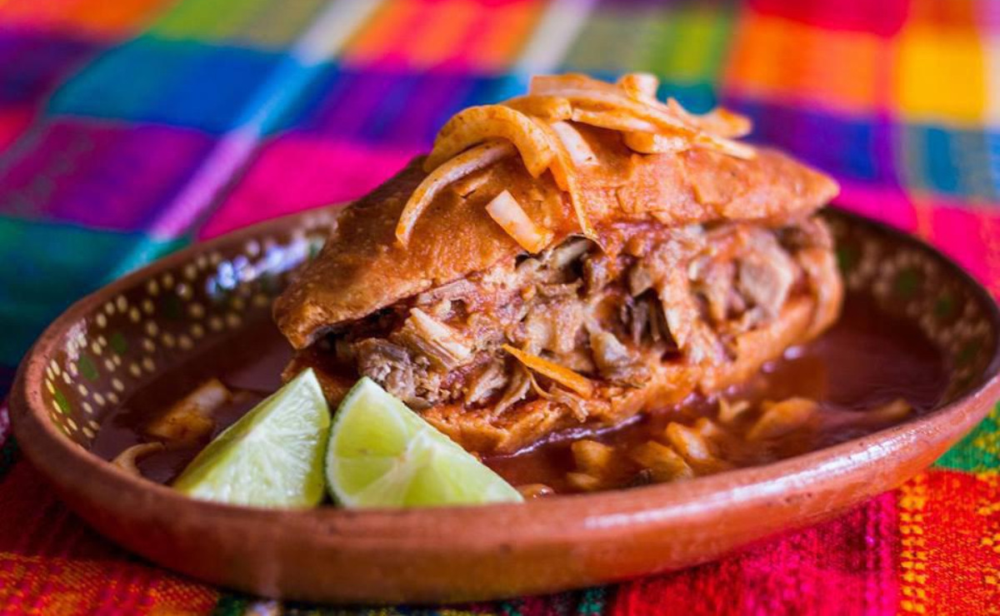
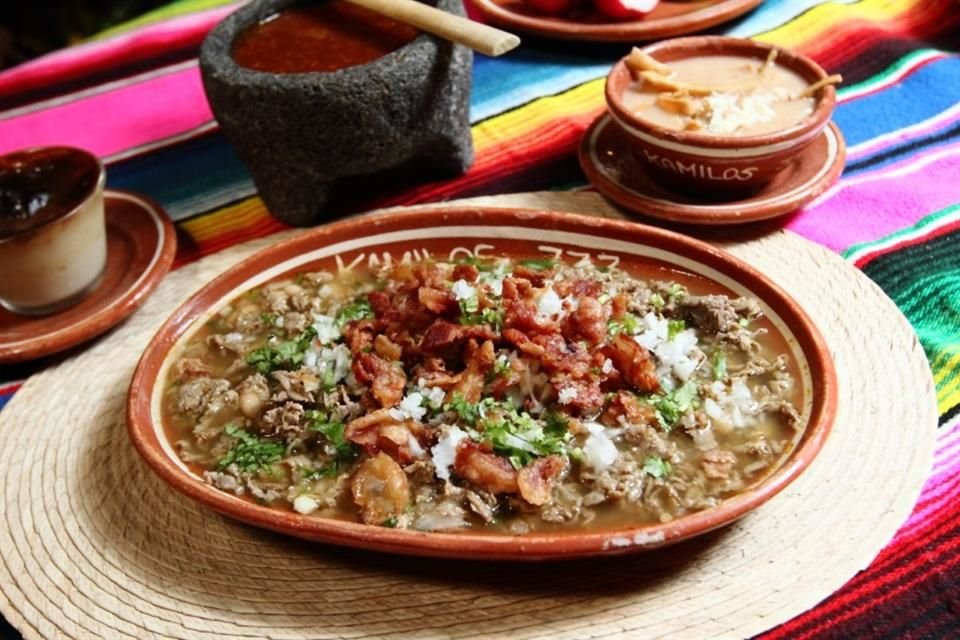
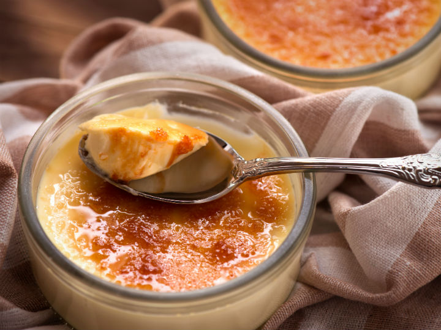

Recetas Típicas de Jalisco

Torta Ahogada
El platillo más icónico de Guadalajara. Elaborada con birote salado, rellena de carnitas y bañada en una deliciosa salsa de chile de árbol y jitomate.
Receta
Birria
Tradicional platillo a base de carne de chivo o res, marinada en un rico adobo de chiles y especias, horneada lentamente.
Receta
Carne en su Jugo
Un guiso reconfortante de pequeños trozos de carne de res cocinados en su propio jugo con tocino, frijoles de la olla y cebolla asada.
Receta
Jericalla
Postre tradicional tapatío, una mezcla entre flan y natilla con un característico y delicioso toque tostado en la parte superior.
Receta